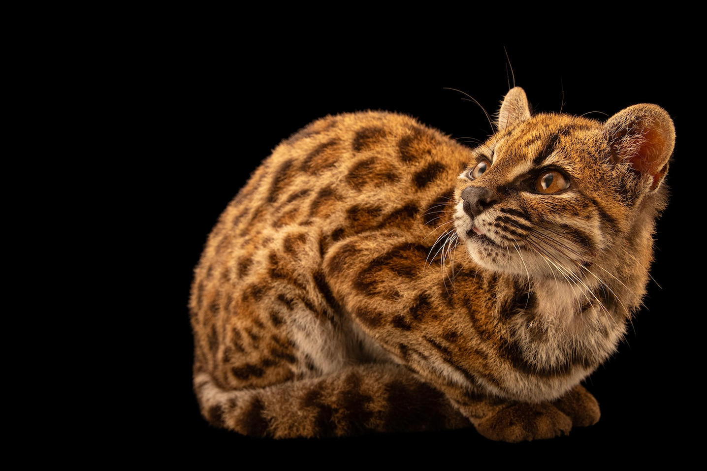

黑洞英语
/
DESIGN STUDY
01 — 外刊首页
390
430
px
深色
9:41
黑洞英语
取消
外刊
看见世界的另一面
精选
科技
文化
自然
历史

今日精读
THE DAILY READ
NATIONAL GEOGRAPHIC
自然与生命
Meet the first new cat species discovered in 100 years
百年来首次发现的全新猫科物种
1,494 词
·
10 分钟
开始阅读
接着读一篇
Can the AI arms race be stopped?
值得一读
换个角度，看世界
这次没有找到
换个关键词，或看看其他主题。
查看全部文章
读完一篇，就是新的开始。
外刊
书架
词库
我的
文章速览
单页视觉样稿 · 可滚动、筛选、搜索与查看文章